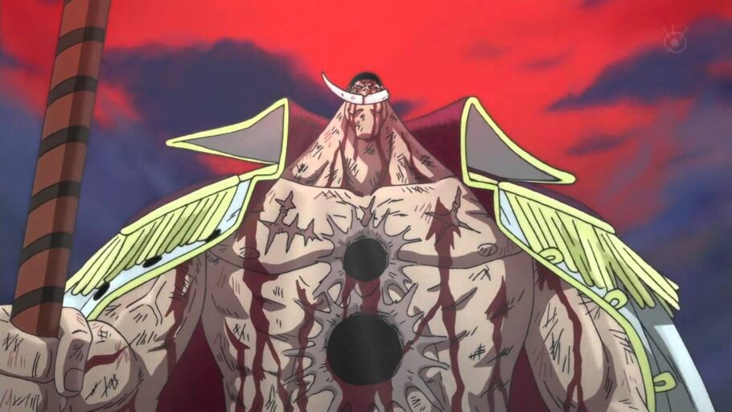

"Não é você o homem que Roger está esperando... Pelo menos, Teach... Não é você. Assim como existem aqueles que herdaram a vontade de Roger... Tenho certeza que um dia alguém vai herdar a vontade de Ace. Mesmo que vocês acabem com a linhagem dele, não há como apagarem sua chama. Ela vem sendo passada desde tempos antigos... E no futuro... Algum dia... Alguém vai aparecer, carregando toda a história daquele tempo em suas costas... E vai desafiar o mundo inteiro. Sengoku, vocês do Governo Mundial... Todos temem essa imensa guerra que vai envolver o mundo inteiro... Que um dia, acontecerá. Eu não me importo comigo... Mas quando alguém encontrar aquele imenso tesouro... O mundo inteiro vai virar de cabeça para baixo. E alguém vai encontrá-lo. Esse dia com certeza virá. O ONE PIECE EXISTE!!!
resumo da guerra dos maiorais AQUI